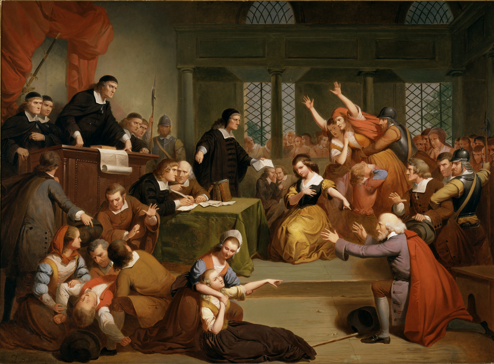

Judge, Jury, and Executioner
A mashup of Trial of George Jacobs by Thomkins H. Matteson (1813–1884 CE), which depicts the Salem Witch Trials. I've observed that the Wojak and its variations have become a sort of cheap rhetorical ammunition on various platforms (though most originate from 4chan), so I've used it here to portray internet vigilantism, online witch hunts, and social media herd mentality.

